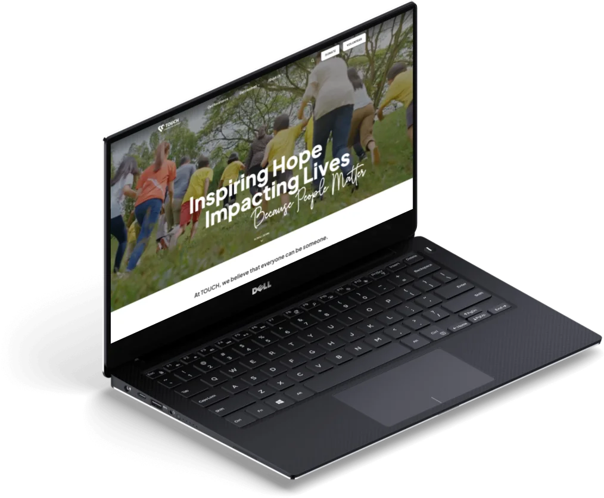
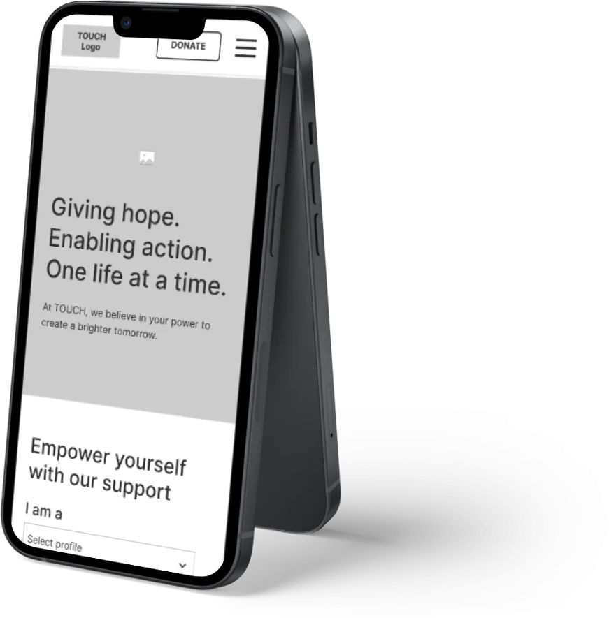
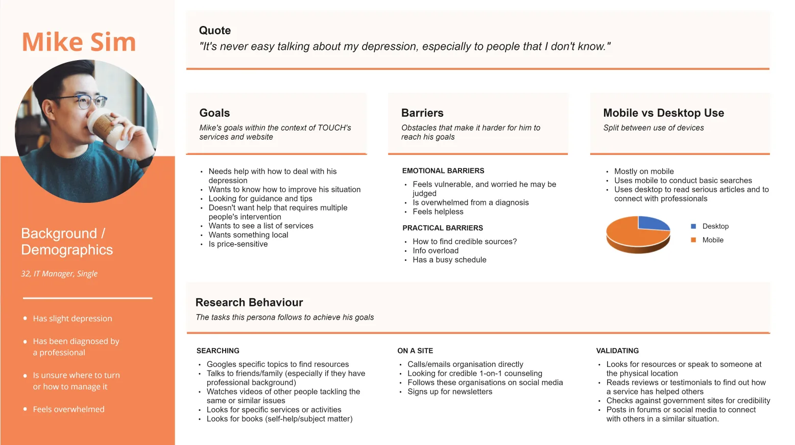
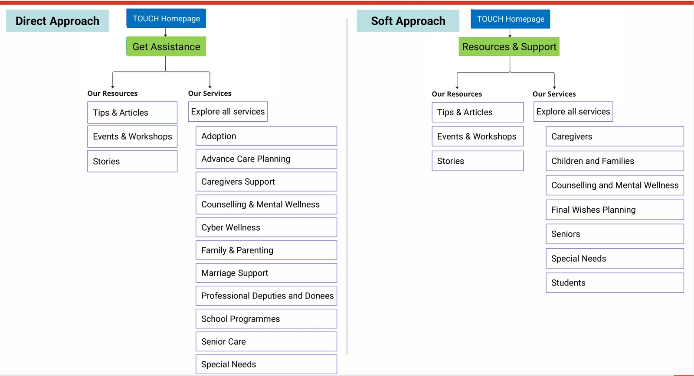
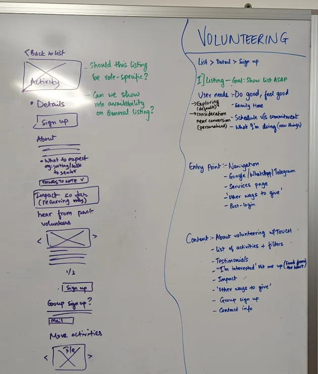
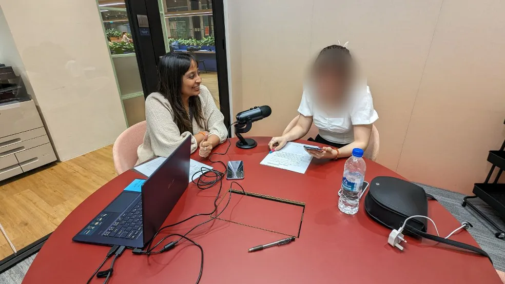

TOUCH Community Services
A nonprofit website for people seeking help and people offering it
I pitched, won and led this website redesign and volunteer portal as part of Convertium’s UX team, and mentored a junior designer throughout.
- Role
- UX strategist and designer
- Project
- 1 year, 2023
- Client team
- TOUCH: multiple stakeholder teams, Marketing
- Convertium team
- Project management, UI, development


What came out of it
- In the information architecture, clearer, more literal labels outperformed warmer, softer phrasing, even for sensitive subject matter.
- Evidence from the tree test resolved a long-standing internal disagreement about how services should be grouped, in working sessions with seven Services teams and C-suite stakeholders.
- A formative first experience of mentoring a designer through a full project lifecycle, start to finish.
Post-launch metrics aren’t available to me.
The challenge
Build a platform that gives each user group easy access to reliable resources: people looking for help, people wanting to help, and corporate and community partners.
The specific goals:
- More use of self-help resources by beneficiaries and caregivers
- Lead generation and conversion: more volunteer sign-ups through a smooth application process, and more newsletter subscriptions
- More returning visitors for repeat donations and volunteering, through a seamless journey
- More interest from TOUCH beneficiaries in volunteering or donating, and vice versa
Activities
Navigating TOUCH’s organizational structure, and designing with care for the sensitivities of its beneficiaries, was foundational to getting this right.
Stakeholder interviews and report
5 interviews, covering the C-suite and 7 Services teams.
User interviews and report
14 interviews with people who need help and people who want to help.
Landscape review
10 organizations, including TOUCH, compared on messaging, information architecture and usability.
Personas and user journeys
Two main user groups: people needing help and people wanting to help.
Information architecture and tree testing
2 versions of the structure tested with 140 respondents, 13 questions each, using UXtweak.
Wireframing and usability testing
Key flows such as monetary donations, volunteering and searching for resources, tested with 10 participants.
Process
User interviews showed that the two groups’ needs were distinct and needed clear funneling.


Two separate approaches to the structure were tree-tested. The result was a hybrid that took the best of both.


Key flows were worked out on the whiteboard, drawn up as mid-fidelity wireframes, and tested with 10 participants. The board shown here is volunteering: listing, detail, sign-up.



